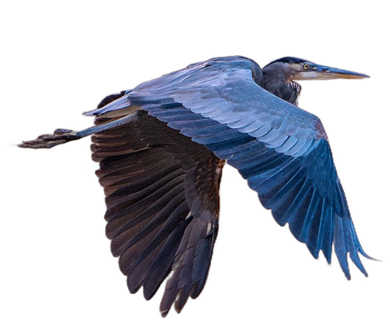

abby martin github linkedin

+++++++= ----
++*+****++*=:--==
-==+++++ ++++
==+=--=---=+*
----::::-----==
:::::::::::----::-=+
::::::----:--== --
:::::::- -::::-:::---
..::.:::::: ---::::::-
::: ..::: ::: -::::::::-\
(: ::::/ :--: -:::::::-
:::::: :--- -:-::--=
|:::: --:: -::-==
--:: -:::/ -: \ \
:: ::: \
:::/
:::
...-.
..-----..
.----::::
.-----:::::
-:::-:::::::
--... .----::::::::
-----------::::::::
:----------::::::
----------- :::::
---------
..--.-.
.-
----+ +=-:==# =====+*% ---==**@% .---:-+%@% .:-::-= :::- .:+
%%*
###+++**##
%#+=--=+***###**###%
%=-:::++*+==-*###**####+**##
*-:::-++=-::+**+======-+*##%%%%
#=::::===-:-**+++=-::=*#######% %%%
#=:::-==::-**++=-::-*####**++#%%%%%%
#-:::---::+++++=::-*****+==+*%#%#%%%%%
+:::::::-=++=-:::=====--:-==+**++*#####
+::::::::-=-::::::::::::::::-------=++**
-:::::::::::-++** ::---=+
-:::: #
---+=
::---=
::----= =
=-=:---== ===---
--=-------===-=-
- -:-::---:::--=
:=--=====-===
#*=--=====+=+
#+-::--=-::
#+=::--=-:::
#+--=--::
+=--
#
------*+
-::-=*
=:::-
*=+=--
*#**+
%##***
###*++
%****#*+
#######*
%#%#####**
###*#*****+
##%####**++++++
%##**++*++++++=+= :
**++===++=++++====-::-
---=====-----=+=++=
=::::=+++**+